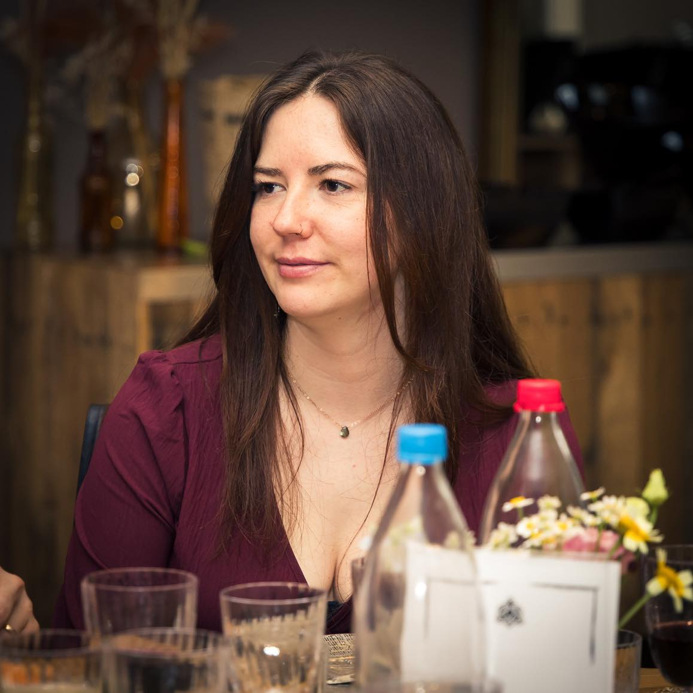

My Resume

About Jo Cuypers
- Born in Vilvoorde, Belgium - December 1st 1994
- Belgian nationality
- Personality
- Eager to learn
- Insightful
- Empathic
- Responsible
- Enthousiastic
- Contact me
Education
- Certificate as a pharmaceutical technical assistent (focused on apothecary)
- 2014-2015
- Paramedical institute, Mechelen
- Bachelor's degree in pharmaceutical and biological laboratorytechniques
- 2017-2020
- Erasmushogeschool, Brussels
- Postgraduat certificate in forensic research
- 2020
- Erasmushogeschool, Brussels
Relevant Work Experience
- Quality Projects Technician, Pfizer Puurs
- 2021-now
- Writing procedures, internal system maintenance, writing reports
- Internship Sciencano, Elsene
- 2020
- Research on the concentration of nicotine in urine from smokers and non-smokers
- Internship VUB, Brussels (university)
- 2020
- Research on the impact of ghrelinereceptor stimulation (epilepsy)
- AZ Klina, Brasschaat (hospital)
- 2015-2017
- Sterile stockroom maintenance and supply to internal departments
Skills
- Microsoft office
- SAP
- LIMS
- HTML